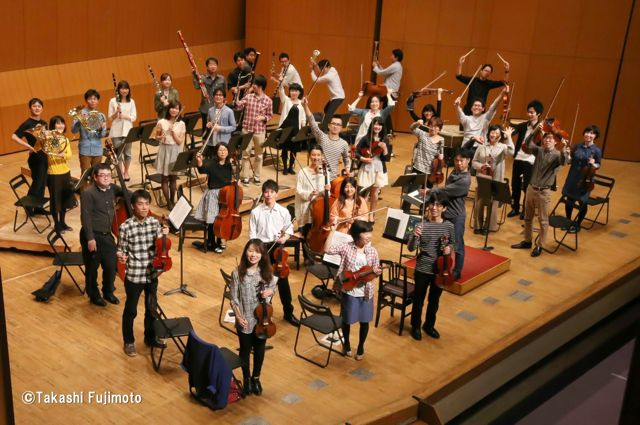

当団について

エステルハージ室内管弦楽団は、2010年春に誕生した小さな編成のオーケストラです。
メンバー1人ひとりが「自分の音」を出し、お互いの音を聴き合い、密にアンサンブルしてハーモニーを創っていく。
そんな大きなオーケストラとは一味違う、室内楽的な愉しみと喜びを「古典音楽」という最高のテクストから追求したい。
そんなアマチュア奏者たちが集まって結成しました。
団名に名前を借りているエステルハージ家は、ハイドン、モーツァルト、リストやシューベルトに至るまで、彼等を庇護し、その音楽の最大の理解者でありました。
これにならい、我々も彼等の音楽に、最大限の敬意と愛情をもち演奏していくことを目指しています。
メンバー1人ひとりが「自分の音」を出し、お互いの音を聴き合い、密にアンサンブルしてハーモニーを創っていく。
そんな大きなオーケストラとは一味違う、室内楽的な愉しみと喜びを「古典音楽」という最高のテクストから追求したい。
そんなアマチュア奏者たちが集まって結成しました。
団名に名前を借りているエステルハージ家は、ハイドン、モーツァルト、リストやシューベルトに至るまで、彼等を庇護し、その音楽の最大の理解者でありました。
これにならい、我々も彼等の音楽に、最大限の敬意と愛情をもち演奏していくことを目指しています。
指揮者